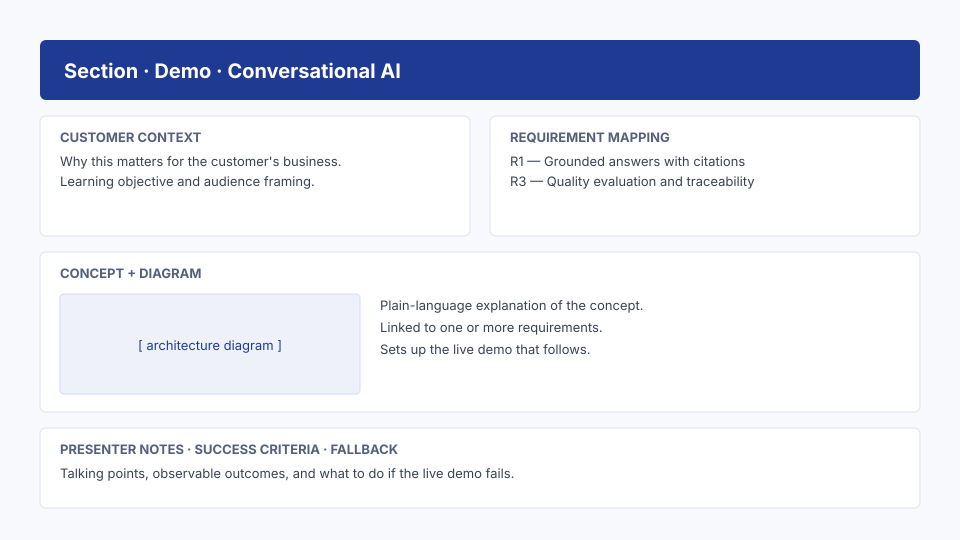

8. Explanatory sections — Contoso Outdoor¶
Goal¶
Enrich each of the six Contoso Outdoor sections (Coverage Lookup, Claim Status, Provider Search, EOB Extraction, Evaluation Scorecard, Roadmap) with the didactic content that makes a workshop teach, not just demo.
Why it matters¶
A blank section says "demo goes here". A great section frames the concept, shows the architecture, runs the demo, and proves the outcome. This is where customer trust is earned.
Inputs¶
- Generated app skeleton.
- Customer scenario and requirement IDs.
Step-by-step¶
For each section, add the following content blocks:
- Customer context — one paragraph linking back to the scenario.
- Learning objective — one sentence.
- Requirement mapping — list of requirement IDs covered.
- Concept explanation — short, plain language.
- Architecture diagram — Mermaid block.
- Demo placeholder — to be filled in Module 8.
- Presenter notes — talking points and timing.
- Success criteria — observable outcomes.
- Fallback — what to do if the live demo fails.
- Microsoft Learn references — 2–5 authoritative links per section
(
learn.microsoft.comandgithub.com/Azure-Samples).
Ground every section in official Microsoft documentation¶
The single biggest lever on workshop credibility
Every explanatory block in every section must cite at least two official Microsoft sources. This is non-negotiable. It is also the easiest part of the workshop to get right — Microsoft Learn is comprehensive and free.
A workshop is a teaching artifact. The CSA's job is not to originate the
concepts but to curate them and apply them to the customer's situation.
That means every concept the audience hears should be traceable to
learn.microsoft.com, github.com/Azure-Samples, or the official Foundry /
Fabric / Security documentation.
Why this matters¶
- Trust. Architects in the room will fact-check you in real time. A link to the Learn page closes the loop in 30 seconds; a hand-wave doesn't.
- Reusability. When the next CSA forks your repo six months later, the underlying SDK has probably moved. The Learn links update with the product; your prose doesn't.
- Compliance. Security and risk teams need an audit trail. "It's in the official Microsoft Learn architecture guide" is the answer they expect.
- Time. Writing original prose about how vector search works wastes a day. Citing the Learn page and contextualizing it for the customer takes 15 min.
Where to find the right reference¶
| Concept area | Start here |
|---|---|
| Azure AI Search (indexing, vector, hybrid, semantic ranker, RAG) | learn.microsoft.com/azure/search/ |
| Azure AI Foundry (agents, evaluations, projects, hub) | learn.microsoft.com/azure/ai-foundry/ |
| Azure OpenAI (deployments, "use your data", function calling) | learn.microsoft.com/azure/ai-services/openai/ |
| Reference RAG implementation | github.com/Azure-Samples/azure-search-openai-demo |
| Microsoft Fabric (lakehouse, OneLake, Direct Lake) | learn.microsoft.com/fabric/ |
| Responsible AI (groundedness, safety, content filters) | learn.microsoft.com/azure/ai-foundry/responsible-ai/ |
| Microsoft Security (Sentinel, Defender, Copilot for Security) | learn.microsoft.com/security/ |
Citation block template¶
Every section template ships with a refs block. Always fill it.
<div class="refs">
<div class="refs__label">Official Microsoft Learn references</div>
<ul>
<li><a href="https://learn.microsoft.com/azure/search/search-what-is-azure-search">What is Azure AI Search?</a></li>
<li><a href="https://learn.microsoft.com/azure/search/vector-search-overview">Vector search overview</a></li>
<li><a href="https://learn.microsoft.com/azure/search/hybrid-search-overview">Hybrid search overview</a></li>
</ul>
</div>
The live demo shows this pattern in every section — open any of the six sections and scroll to the bottom of the explanatory block.
Copilot prompt — generate the citation block¶
For each section under sections/, read the concept paragraphs and propose
2–5 official Microsoft references. Constraints:
- Only learn.microsoft.com, github.com/Azure-Samples, or microsoft.com URLs.
- Each link must back a specific claim made in the section's concept block.
- No marketing pages, no blog posts, no third-party tutorials.
- Output as the <div class="refs"> block ready to paste at the end of the
section's explanatory content.
Copilot prompt¶
For every section under sections/, add the following content blocks using the
Jinja2 templates already in the project:
- Customer context (1 paragraph, references customer-scenario.md)
- Learning objective (1 sentence)
- Requirement mapping (bullet list of requirement IDs from agenda.md)
- Concept explanation (plain language, no jargon)
- Architecture diagram (Mermaid)
- Demo placeholder (leave a clearly marked TODO block)
- Presenter notes (3–5 bullet points)
- Success criteria (3 observable outcomes)
- Fallback (1 paragraph: what to show if the live demo fails)
Keep the content reusable. Do not hard-code customer name in templates;
read it from a single config file.
Expected output¶
Every section now has consistent didactic content; only demos remain as clearly-marked TODOs.
Worked example — Contoso Outdoor "Claim Status" (gold sample)¶
This is the gold-sample section. Copy its structure into the other five Contoso Outdoor sections.
# Claim Status
> **Mapped requirement(s):** R3, R6
> **Time on stage:** ~18 minutes (8 explain, 7 demo, 3 Q&A)
> **Demo file:** data/claims.json
> **Section folder:** sections/claim_status/
## Customer context
Marcus (Director, Claims Ops) opens 28% of his weekly tickets because
a member called the call centre and the agent could not explain
*where* a claim was in flight. The agent had to alt-tab between
three systems and read codes the member did not understand. This
demo shows the same question answered in one screen, in plain
English, with a timestamp the member can trust.
## Concept
A claim moves through five canonical states: received → validated →
adjudicated → paid → notified. Each state is owned by a different
back-end system and emits an event. Search subscribes to
those events, normalises them to the canonical timeline, and renders
them with the source system and last-updated timestamp. Nothing is
computed; we show the truth that already exists.
## Demo
Open /sections/claim_status and run the happy-path claim
NW-CLM-2025-0418-77321, then switch to the failure-path claim
NW-CLM-2025-0301-44102 (pended for COB) and walk the human-handoff
modal.
## Evidence
The right-panel payload, source-system badges, and trace passed to
the handoff modal — all three pulled from data/claims.json so the
audience can see "what the model saw".
## Presenter notes
- Open with Marcus's number: "28% of your weekly escalations are
variants of where is my claim. We're going to remove that ticket."
- For the pended claim, *do not* skip the handoff modal. Compliance
watches for it.
## Common pitfalls
- Demoing only the happy path. The failure path is what makes the
evaluation demo credible later.
## Next
EOB Document Extraction. Same claim ID, now we open the EOB.
Full source:
samples/contoso-outdoor-search-workshop/sections/
Section writing tips
- One sentence of business framing > three paragraphs of feature spec. The audience will not read the third paragraph.
- Mermaid diagrams must fit at 1080p without zoom. If you have to zoom, split into two diagrams.
- Presenter notes are written for you a month from now. Include the literal sentence you say while the demo loads.
- Demo one failure case explicitly. Audiences trust dashboards that admit imperfection more than dashboards that show only green.
- Each section's last line should hand off to the next section by title. Builds a thread the audience can follow.
Drop-in section template¶
Copy this into any new section template (sections/<slug>.html or markdown):
## Customer context
One paragraph linking back to customer-scenario.md.
## Learning objective
One sentence — what the audience leaves knowing.
## Requirement covered
R1, R3
## Concept
Plain-language explanation. No marketing.
## Diagram
```mermaid
flowchart LR
U[User] --> A[API] --> S[Service] --> E[Evidence]
```
## Demo
{% include "demos/chat.html" %}
## Evidence
- Trace ID, token usage, cost.
- Groundedness score, citations.
## Presenter notes
- 30-second exec framing.
- Where to slow down.
- Likely audience questions + answers.
## Fallback
If the live demo fails, show the recorded clip at `static/clips/<slug>.mp4`
and walk through `data/<slug>.json`.

Validation checklist¶
- All sections share the same content structure.
- Customer name comes from one config file.
- Each section lists the requirement IDs it covers.
- Presenter notes exist for every section.
Common issues¶
Inconsistent tone across sections
Likely cause: Copilot generated each section in isolation. Re-prompt with "Match the tone and structure of section 01 across all sections."
Next step¶
Continue to 9. Add interactive demos.